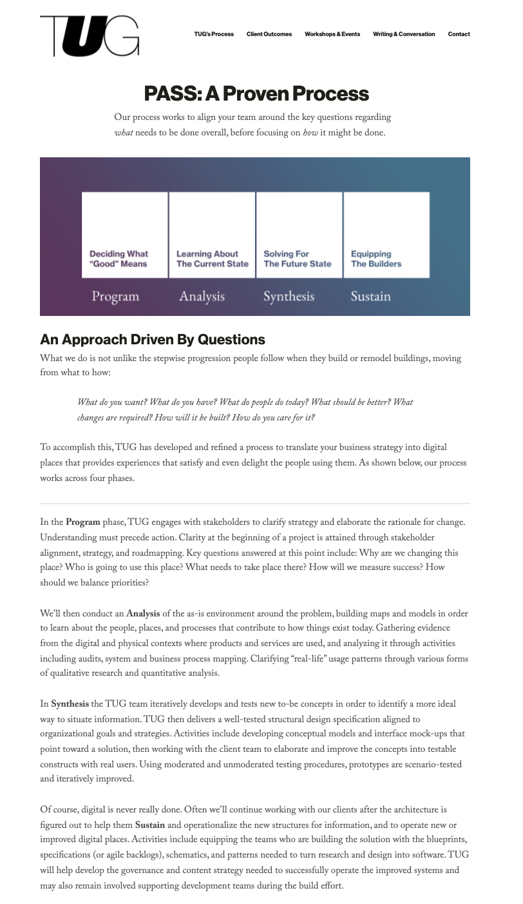

Making the information architecture of TUG's website make sense
Redesgning the navigation of The Understanding Group (TUG)'s website to increase usability, support content development initiatives, and increase sales
New Good Purpose & Practice page
Background
For a while I had been envisioning changes to The Understanding Group’s website. Before working at TUG, while taking Dan Klyn’s course on Information Architecture at UMSI, I had read some of the articles + videos on IA theory and practice on TUG’s website. But I remember they were really hard to find—they were accessible only from a button that didn’t look like a button in the pre-footer of TUG’s website. The content was so interesting and it pained me to know that most visitors to the website wouldn’t encounter it.
Months later while working as a marketing intern at TUG, Dan Klyn said he wanted to convert the IA Theory and Practice archive to a new classification scheme: Good Purpose, Good Process, and Good Practice. This sounded good to me, as it offered me the chance to improve the site that I had waited months for. Also it gave me a chance to address a parallel concern I had developed in the meantime: TUG’s website didn’t feature enough information about what TUG does, TUG’s process, in other words.
Process
My first question was “What content aligns with each bucket?” Good Purpose would map to the Theory Archive. But “practice” and “process” are similar words. Would the Practice Archive map to both “Good Process” and “Good Practice?” And what about the Lecture Library—the video lectures included but not named within the IA Theory and Practice library—which bucket would that go into? Things were getting messy quick.
I decided to take a step back and define “Good Theory,” “Good Process,” and “Good Practice,” first using my own words and then, once I found them afterward, TUG’s words.

I decided to take a step back and define “Good Theory,” “Good Process,” and “Good Practice,” first using my own words and then, once I found them afterward, TUG’s words.
Then I asked myself, but what about the other sub-blogs I had discovered in the caverns of unlinked files on the backend of TUG’s website—Dan Klyn’s writings about Richard Saul Wurman? And what about the unbelievably rich-in-content live webinar/potential podcast “Sunday Service” recordings and write-ups that were impossible to find on the site? Why not reorganize things and make them more findable—bring the good stuff to more people! After all we are information architects!
I asked Dan how married he was to the three “Good” categories. He responded with “The only thing I’m married to Sally Klein,” which made me laugh. After considering it for a few days I became convinced best thing to do was to combine Good Process and Practice, since the two words were so similar in meaning. Also I decided to combine the video lectures with the underused “TUG Talks” page, thereby housing all of our video content in one place. Having modeled the information and decided on a course of action, the next thing to do was sketch out my ideas for the new pages.
As for the problem of surfacing all of this good stuff, I proposed we give it its own dropdown navigation element. That way way more people would have a chance to encounter it! At the same time, I proposed adding a page that outlined TUG’s process, something that had been on TUG’s Co-Founder Bob Royce’s wish list. Also I said why not get rid of the “sign in” navigation element, which no one knew why we had.
Once the sketches looked good, the last step was to build the pages and reorganize the nav on the back-end.
By compiling content from our various RFPs and presentations, as well as utilizing the knowledge I gained of TUG's process from my many months of working with the team, I designed the TUG's Process page to explain the hows and whys of TUG's process, which is trickier than it sounds because of the unconventionality of TUG's process. If clients were going to invest in our at times peculiar services, they had to understand exactly why we do what we do. Leveraging explanatory images created by members of the team, the page outlines our approach, philosophy, and most powerful tools, while funnelling users toward case studeis on the Client Outcomespage. To make the content more easily scannable, I grouped it into sections, added lots of images, and balanced images alongside text so users' eyes can cascade down the page with ease.
And that was that! Phew—sorry for all the scrolling.
Future plans include improving the Client Outcomes page, but that will have to be a story for another day...
Closure
I finally got my chance to do something I had wanted to do for months: contribute to TUG by making its digital place more good. Working at TUG has been a profound experience. I have cherished every second of it and look forward to doing more of it. I’m so glad and hopeful that more people will encounter the thoughtful content about Information Architecture to be found—now hopefully more easily!—on TUG’s website.
Visit
PLEASE do yourself a favor and check out the wonderfully informative content to be found on TUG's website. And while you’re there, maybe see if TUG can help bring clarity to your next project's complexity.